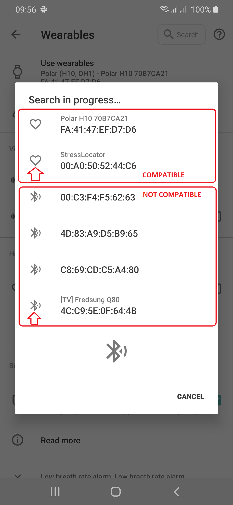

Heart rate detection#
Heart Rate & HRV Tracking#
Tracking your cardiovascular data during sleep provides essential insights into your sleep recovery, physical stress levels, and overall autonomic nervous system balance. Sleep as Android can continuously log your Heart Rate (HR) and Heart Rate Variability (HRV) throughout the night when paired with compatible wearables or pulse oximeters.
Quick Reference Guide#
- Red Line (HR): Your Heart Rate measured in beats per minute (BPM).
- Violet Line (HRV): Your Heart Rate Variability (variation in time between consecutive heartbeats).
- Number Bubbles: Highlights local minimums (lowest points) and maximums (highest points) during your sleep.
- Recovery Indicator: Lower resting heart rate and higher HRV typically signify deeper recovery and lower stress levels.
Why Track Heart Rate & HRV?#
Integrating heart rate data into Sleep as Android enhances both your sleep graphs and sleep analytics:
- More Accurate Awake Detection: Heart rate spikes often accompany micro-awakenings or brief restlessness, making wake detection significantly more precise.
- Stress & Recovery Tracking: Monitoring HRV helps measure your nervous system’s recovery from exercise, work stress, or alcohol intake.
How to Read Your Heart Rate Graph#
When heart rate tracking is enabled, your cardiovascular metrics overlay directly on your main sleep graph:
- Heart Rate (Red Line): Shows continuous heart rate fluctuations throughout the night. Red bubbles indicate your overnight lowest resting HR and highest peak HR.
- Heart Rate Variability (Violet Line): Shows Beat-to-Beat variations. Violet bubbles highlight peak HRV points. Higher baseline values generally reflect good recovery.
Where to find it: Tap any sleep graph card on your Dashboard to expand the Graph view and see HR/HRV layered alongside your sleep phases and actigraph.
Setting Up Heart Rate Tracking#
Sleep as Android supports heart rate monitoring across a wide range of smartwatches, fitness bands, chest straps, and pulse oximeters.
Standard Smartwatches & Wearables (Wear OS, Garmin, Galaxy, etc.)#
- Ensure your wearable is connected to your phone via its official companion app.
- In Sleep as Android, navigate to:
Settings→Sleep tracking→Wearables→Wearables. - Select your device model or platform from the list.
- In the same Wearable section enable Heart rate monitoring.
Bluetooth Heart Rate Chest Straps / HR Monitors (e.g., Polar H10…)#
- Turn on your Bluetooth HR sensor.
- In Sleep as Android, navigate to:
Settings→Sleep tracking→Wearables→Bluetooth Smart - Pair your chest strap directly.
Bluetooth Pulse Oximeters#
Many Bluetooth pulse oximeters transmit both Blood Oxygen (SpO₂) and Heart Rate simultaneously.
- Navigate to:
Settings→Sleep tracking→Wearables→Pulse oximeter (Bluetooth)For more details on oximeters, please refer to this guide.
Only wearables that use the standard GATT Heart Rate Profile can be connected via Bluetooth Smart for direct data collection.
- Go to
Settings→Sleep tracking→Wearables→Bluetooth Smart.- The app will scan for nearby devices.
- If your wearable is listed with a heart icon, it is compatible with the direct protocol.
- If your wearable is not listed with a heart icon, you may need to use a cloud service bridge like Health Connect, or Samsung Health, from which Sleep as Android can download the data after the session ends.

❓ FAQs & Troubleshooting#
Why is Heart Rate not showing up on my sleep graph?
If your graph does not show the red HR line, check the following:
- Verify that Use wearable is configured correctly to match your watch in
Settings ➔ Sleep tracking ➔ Wearables. - Check if another health app on your phone or watch is maintaining an exclusive lock on your sensor.
- If using Wear OS or Galaxy Watch, ensure continuous heart rate measurement is enabled in your watch’s system settings.
What is Heart Rate Variability (HRV) and why is higher usually better?
HRV measures the subtle time differences between consecutive heartbeats. A higher HRV indicates that your autonomic nervous system is responsive and balanced (indicating low stress and good recovery). A sudden drop in overnight HRV can be an early signal of physical exhaustion, onset of illness, or high stress levels.
Does heart rate tracking drain my battery?
Continuous Bluetooth streaming consumes slightly more battery than standard motion tracking. If preserving battery has higher priority to you than real-time HR data in Sleep app, you can let Sleep app sync the data from the native app by using the Health Connect or Samsung Health. When the tracking is terminated, the app will sync the data and will re-evaluate the awake detection.
Need further help? Contact us via Left ☰ Menu → Support → Report a bug.